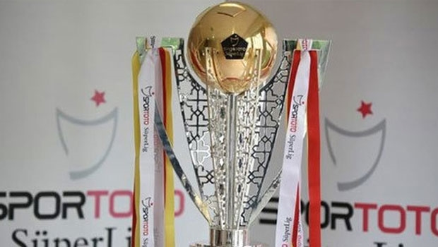
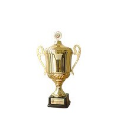

TÜRKİYE KUPASI | 9
1976-77, 1977-78, 1983-84, 1991-92, 1994-95, 2002-03, 2003-04, 2009-10, 2019-20

SÜPER KUPA | 3
2009-10, 2019-20, 2021-22

LİG ŞAMPİYONLUKLARI | 8
1975-76, 1976-77, 1978-79, 1979-80, 1980-81, 1983-84, 2010-11, 2021-22

Cumhurbaşkanlığı Kupası | 7
1975-76, 1976-77, 1977-78, 1978-79, 1979-80, 1982-83, 1994-95